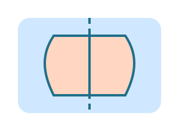

מה לומדים?
- מקבילית, מעוין, דלתון וטרפז.
- סימטריה שיקופית וסימטריה סיבובית.
- איך למצוא ציר סימטריה בציור.
דוגמאות קצרות
מצאו שתי צורות עם ציר סימטריה אחד ושתי צורות בלי סימטריה.
משימה ידנית
קפלו דף, ציירו חצי צורה, וגזרו כדי לראות את הסימטריה.
מזהים משפחות של מרובעים ומגלים צירי סימטריה.

מצאו שתי צורות עם ציר סימטריה אחד ושתי צורות בלי סימטריה.
קפלו דף, ציירו חצי צורה, וגזרו כדי לראות את הסימטריה.